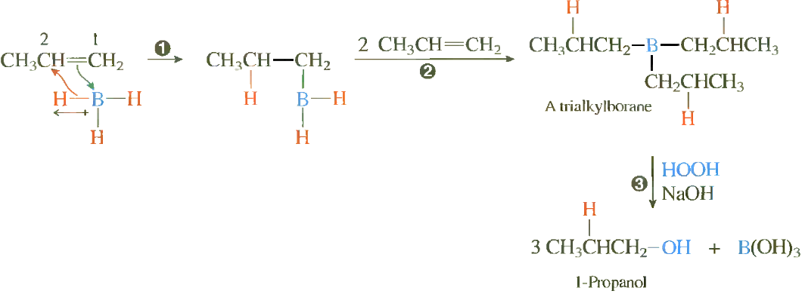
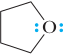
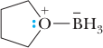

Hydroboration-oxidation
Borane, BH3, adds to double bonds without catalytic activation, a reaction called hydroboration by its discoverer, H. C. Brown.
|
|
+ BH3 | 1) BH3 ⟶ 2) H2O2, NaOH |

|
Hydroboration-oxidation of alkenes is a valuable laboratory method for the regioselective and stereoselective hydration of alkenes. Furthermore, this sequence of reactions occurs without rearrangement.
Hydroboration is the addition of borane, BH3, to an alkene to form a trialkylborane. The overall reaction occurs in three successive steps. BH3 reacts with one molecule of alkene to form an alkylborane, then with a second molecule of alkene to form a dialkylborane, and finally with a third molecule of alkene to form a trialkylborane.
Mechanism
Step 1: The addition of borane to an alkene is initiated by coordination of the vacant 2p orbital of boron with the electron pair of the π bond. This coordination is a Lewis acid-base interaction, analogous to the coordination of THF to borane shown above. We designate this coordination with an arrow from the alkene to the boron.
Step 2. Both of the other two B−H bonds also add to alkene molecules. The overall result is that one botane molecule reacts with three alkene molecules to produce a boron attached to three alkyl groups, a trialkylborante.
Step 3. In the next step of the reaction, hydrogen peroxide breaks each C−B bond, replacing them with C−OH and B−OH bonds.
Borane cannot be prepared as a pure compound because it dimerizes to diborane, B2H6, a toxic gas that ignites spontaneously in air.
| 2 BH3 | ⇌ | B2H6 |
| Borane | Diborane |
However, BH3 forms stable Lewis acid-base complexes with ethers. Borane is most often used as a commercially available solution of BH3 in THF.
|  | + | BH3 | ⇌ |  |
| Tetrahydrofuran (THF) Lewis base | Borane Lewis acid | Borane–THF complex |
Boron, atomic number 5, has three electrons in its valence shell. To bond with three other atoms, boron uses sp2 hybrid orbitals. The unoccupied 2p orbital of boron is perpendicular to the plane created by boron and the three other atoms to which it is bonded. An example of a stable, trivalent boron compound is boron trifluoride, BF3, a planar molecule with F−B−F bond angles of 120° (Section 1.2E). Because of the vacant 2p orbital in the valence shell of boron, BH3, BF3, and all other trivalent compounds of boron are electrophiles. These compounds of boron resemble carbocations, except that, unlike carbocations, they are electrically neutral. BH3 is a planar molecule with H−B−H bond angles of 120° (see margin). Addition of borane to alkenes is regioselective and stereoselective.
Regioselective: upon addition of borane to an unsymmetrical alkene, boron be-comes bonded predominantly to the less substituted carbon of the double bond. (non-Markovnikov).
Stereoselective: hydrogen and boron add from the same face of the double bond; that is, the reaction is syn (from the same side) stereoselective.
Both the regioselectivity and syn stereoselectivity are illustrated by hydroboration of 1-methylcyclopentene.
+ BH3 ⟶
(R = 2-methylcyclopentyl)
(a racemic mixture)